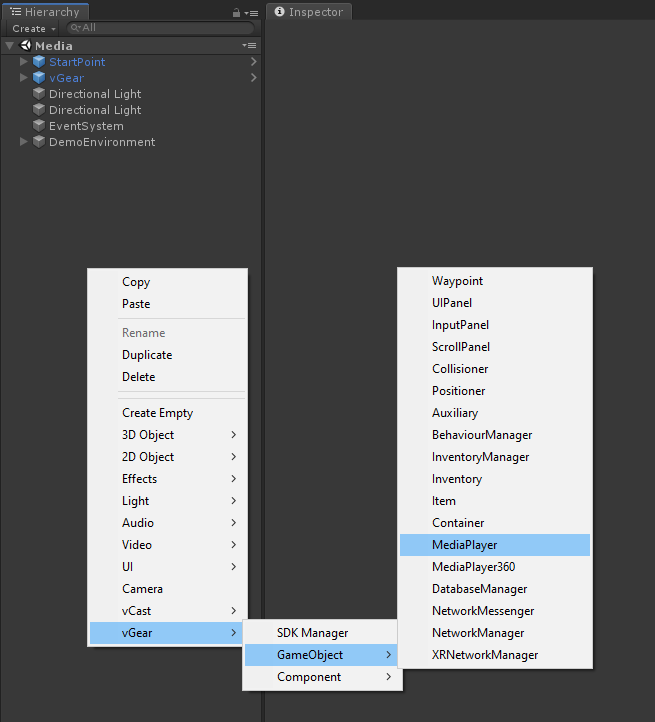

Adding Media
VotanicXR provides features to play several types of media, such as image, audio, video and 360-degree video, in the VR world. This chapter introduces the how the media can be easily added into the application.
Tutorial Scene and Related Materials
Go to Assets > Votanic > VotanicXR_Tutorial > Tutorial06_Media and open the scene Media provided.
Media Player in VotanicXR
VotanicXR provides two types of media player prefabs for developers to easily add media to the VotanicXR application. The MediaPlayer prefab is for regular type media and the MediaPlayer360 is for 360-degree type media. The supported media formats are listed in the below table.
| MediaPlayer | MediaPlayer360
| Type | Regular media | 360-degree media
| Audio | .wav, .ogg,
| Image | .jpg, .png, .tga, .exr
| Video | Refer to Unity Video File Compatibility | .mp4, .mov, .avi, .mkv, .asf, .webm
| | |||
Regular Media Player
Adding the Media Player
Right-click in
Hierarchywindow, selectvGear > GameObject > MediaPlayer. AMediaPlayerpanel GameObject will be added in the project. You can adjust the position of the media play game object in the scene as you want.

Adding Media to the Media Player
In the
Hierarchywindows, click GameObjectMediaPlayer -> MediaPlayerand scroll down in the inspector window to find theMedia Player (Script)script. The main media player properties can be configurated in the[Setting]section.A brief explanation of the media player properties is listed in below table.
Property Description Media The media playlist configuration Ignore list List of media names to ignore in the media playlist Auto Play Enable to play media on the media player ready Auto Next Enable to play the next media file automatically Random Enable shuffling media in the playlist to play media on random sequence Loop Configure various loop mode Volume Configure the player volume, range [0 – 1] Mute Enable to mute the audio DefaultTexture Setup the media player default picture. (usually for playing audio) Playlist can be defined in the
[Settings] > Mediaproperty. Inputsizeto create a list for the media files. For each element below, set the file path of the media in thePathproperty.Note: The
Pathcan be a file, or a folder. If the path is a folder, the media player will create a playlist using all the media in the folder, sorted in alphabetical order. Keep in mind that, if the media are placed under the unityAssetsfolder, the playlist cannot be changed after the project is built. To allow loading the playlist dynamically, we recommend you using theStreamingAsstsfolder or a folder outside of the unityAssetsfolder as the media path.In the following step, we will demonstrate configuring the media player using both a unity asset folder path and an external folder path as an example.
Under Media, set the Size to 2.
For media in unity asset folder, set the
PathtoAssets/VotanicXR_Tutorial/Tutorial06/Resources/inElement 0For media in external folder, set the
Pathto../MediaResources/inElement 1. Then, create aMediaResourcesfolder next to the build folder.- In addition,
Ignore Listcan be set to filter the unwanted media, here we filtersample2.mp4and360.mp4.
- Play the scene and check the result. You can use the media control UI to control the playing of the media in the playlist.
- In addition,
360 Media Player
The MediaPlayer360 prefab is available in vGear for the playback of 360-degree video and images. The MediaPlayer360 is a huge spherical mesh with inverted normal, texture extracted from 360 media are mapped to the mesh so that user can view the media in 360 degrees.
Adding the 360 Media Player
To add the MediaPlayer360 prefab.
Right-click in the
Hierarchywindow, selectvGear > GameObject > MediaPlayer360. AMediaPlayer360spherical GameObject will be added to the project. the default position of the 360 media player is (0, 0, 0), for the better immersive experience, it is recommended to move the user to the center of theMediaPlayer360player.
The steps to adding media to the
MediaPlayer360is the same as the regular media player. Please check theAdding Media to the Media Playersection for details. You may use a 360-video sample for testing by inputtingAssets/Votanic/VotanicXR_Tutorial 2018.4/Tutorial06_Media/Resources/360.mp4into the[Settings] > Media > Element 0 > Path. The result will be as follows in the Scene Window.
Stereo Type for Media Player 360
By default, the MediaPlayer360 player plays monoscopic video, meaning the source 360 media content is not in 3D format. For playing Stereo 360 video, developer can change the StereoType via API function SetStereoType.
IEnumerator Start()
{
yield return new WaitForSeconds(1f);
if (mediaPlayer360 != null)
{
mediaPlayer360.SetStereoType(StereoType.DownUp);
}
}
There are several stereo types None, DownUp, LeftRight, RightLeft, UpDown supported by the MediaPlayer360 player. It is required to set the stereo type according to the video format.